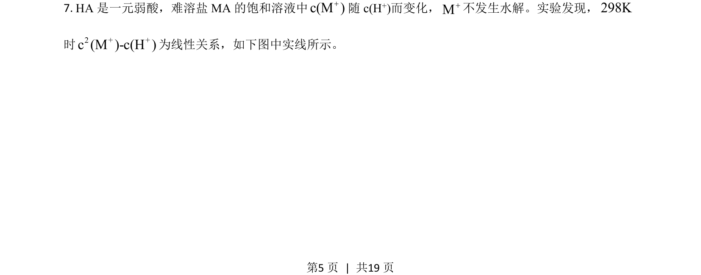
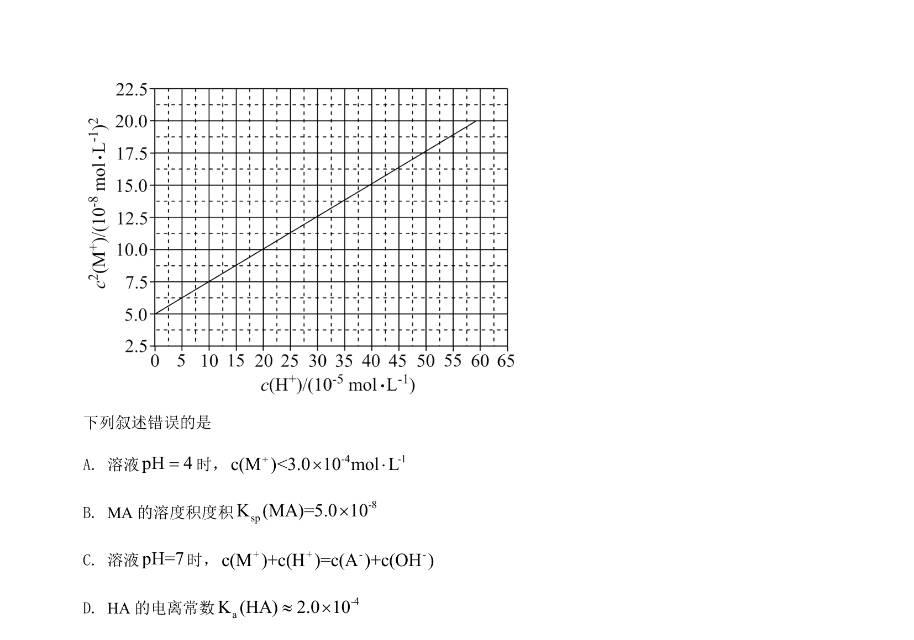
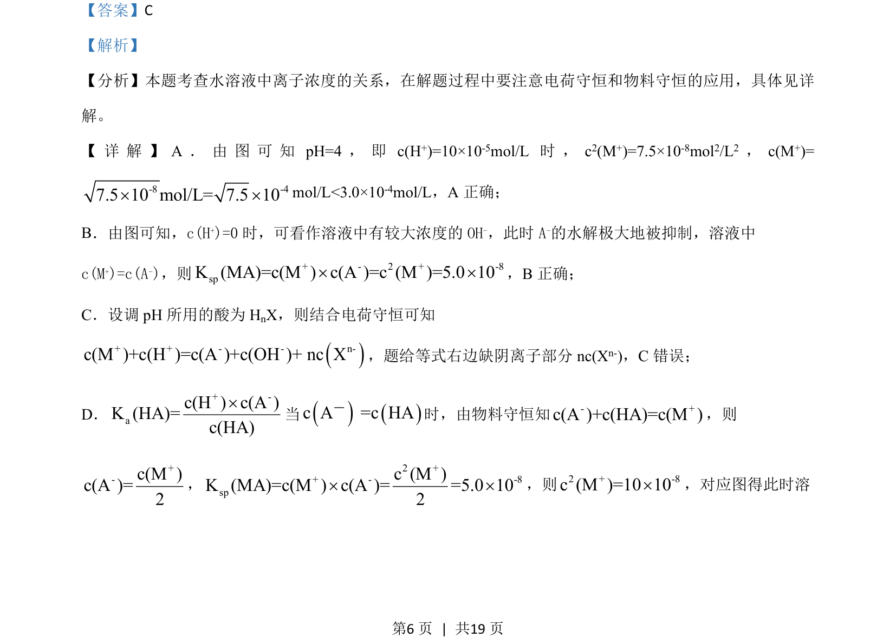
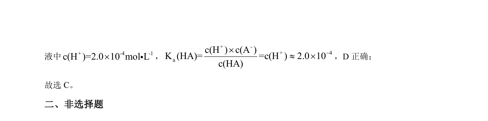

考点：电荷守恒 物料守恒 溶度积常数 电离平衡
电荷守恒
物料守恒
溶度积常数
电离平衡


本题考查水溶液中离子浓度关系的判断，综合应用电荷守恒、物料守恒及平衡常数计算。


📄 原 PDF 第 5 页：素材/真题/吉林/2008-2024·（吉林）化学高考真题/2021年高考化学试卷（全国乙卷）（解析卷）.pdf
素材/真题/吉林/2008-2024·（吉林）化学高考真题/2021年高考化学试卷（全国乙卷）（解析卷）.pdf